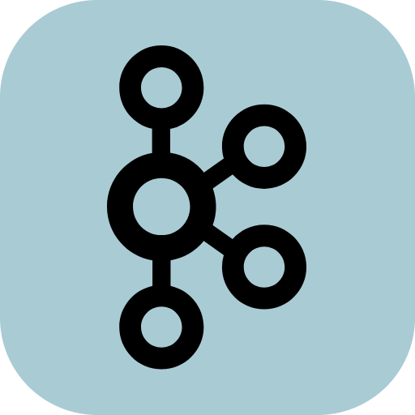

Skip to content 


使用docker启动nginx
最近一段时间好多事情，实习也是天天加班，累。工作的时候更新前端包，看到使用docker实现，自己也打算记录整理一下。
easyexcel
最近实习，干了不少导出导入excel的需求，然后就去总结了一下，方便以后使用
mp概括
MyBatis Plus 是 MyBatis 的增强工具，旨在简化开发、提高效率，并提供一系列开箱即用的功能。它不仅继承了 MyBatis 的灵活性和强大功能，还通过添加自动化代码生成、内置 CRUD 操作、分页插件等特性进一步增强了开发者体验。
存储日期varchar、datetime
使用mysql存储日期时间时，varchar和datetime
mysql模糊匹配
mysql模糊匹配 LIKE 、 RLIKE（或 REGEXP）、 INSTR 函数
git修改历史commit
git修改历史commit。
vuex的使用
Vuex 是一个专为 Vue.js 应用程序开发的状态管理模式 + 库。它采用集中式存储管理应用的所有组件的状态，并以相应的规则保证状态以一种可预测的方式发生变化。
axios的使用
Axios 是一个基于 promise 网络请求库，作用于node.js 和浏览器中。 它是 isomorphic 的(即同一套代码可以运行在浏览器和node.js中)。在服务端它使用原生 node.js http 模块, 而在客户端 (浏览端) 则使用 XMLHttpRequests。
